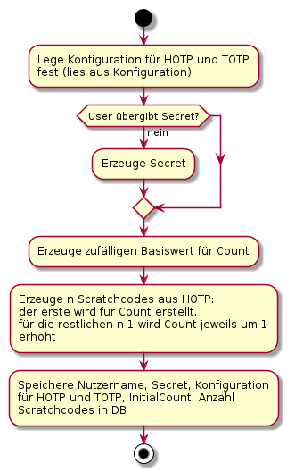
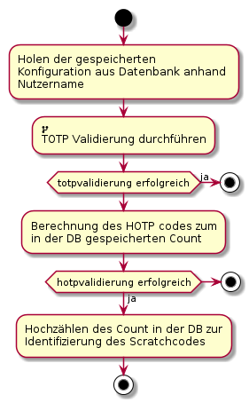
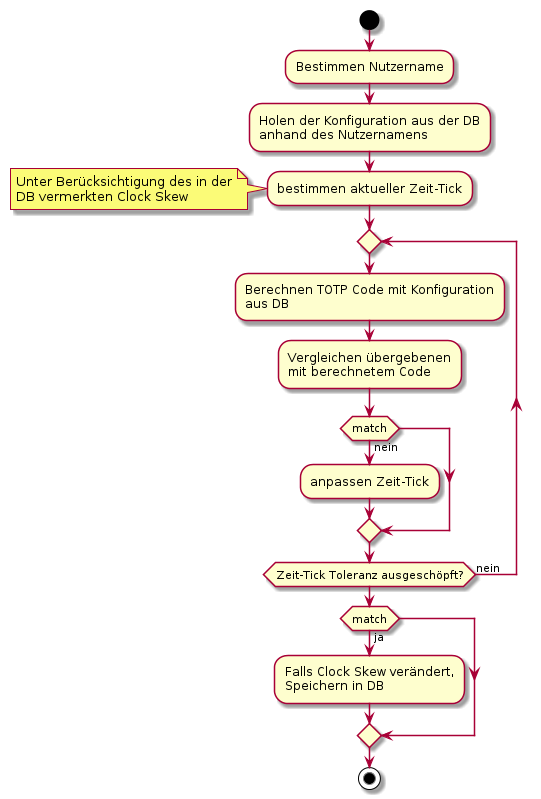

OAuth und OTP
Wie bereits beschrieben will ich mich demnächst näher mit OAuth befassen...
Dazu habe ich mir vorgenommen, das Projekt Hydra zu benutzen wie hier beschrieben.
Dazu benötigt man jedoch noch eine Login and Consent Application. Meine erste Idee dazu wäre, diese mittels Java oder Python und entsprechenden Beispielen zu realisieren - mit festen Nutzern und hart im Quelltext hinterlegten Passwörtern.
Sollte ich damit erfolgreich sein, würde ich versuchen, ein entsprechendes System für OTP (HOTP/TOTP) als Login and Consent Application zu bauen. Dazu habe ich mir Gedanken gemacht, wie ich den Workflow des GoogleAuthenticator nachempfinden könnte - einige grobe Skizzen dazu kann man hier schon einmal bewundern (die Links führen zu Live-PlantUML-Versionen):

Aktivitätsdiagramm Enrolment

Aktivitätsdiagramm Validierung

Aktivitätsdiagramm Validierung (TOTP)Tags
Android Basteln C und C++ Chaos Datenbanken Docker dWb+ ESP Wifi Garten Geo Git(lab|hub) Go GUI Hardware Java Jupyter Komponenten Links Linux Markup Music Numerik PKI-X.509-CA Python QBrowser Rants Raspi Revisited Security Software-Test sQLshell TeleGrafana Verschiedenes Video Virtualisierung Windows Upcoming...


Neueste Artikel
-
 OpenApi-Schema Testdaten-Generator
OpenApi-Schema Testdaten-Generator
Ich berichtete neulich darüber, dass ich nunmehr mit einem Builder-Pattern beliebig komplexe JSON-Strukturen generieren kann.
Weiterlesen... -
D-Bus-Service mit Python
Es ist einige Zeit vergangen seit dem ich mich zum letzten Mal zu Python geäußert habe. Während einer Recherche zu einem komplett anderen Thema habe ich einen Artikel gefunden, der beschrieb, wie man einen D-Bus-Service in Python realisiert. Ich habe die Erkenntnisse mit anderen kombiniert und stelle die Resultate hier vor
Weiterlesen... -
Synchronisierung von Roessler-Systemen
Nachdem ich ein wenig mit der Synchronisation von Lorenz-Systemen herumgespielt habe wollte ich herausfinden, ob sich die gefundenen Ergebnisse auf andere Systeme übertragen lassen - mein erster Kandidat dafür war das Roessler-System.
Weiterlesen...
Manche nennen es Blog, manche Web-Seite - ich schreibe hier hin und wieder über meine Erlebnisse, Rückschläge und Erleuchtungen bei meinen Hobbies.
Wer daran teilhaben und eventuell sogar davon profitieren möchte, muß damit leben, daß ich hin und wieder kleine Ausflüge in Bereiche mache, die nichts mit IT, Administration oder Softwareentwicklung zu tun haben.
Ich wünsche allen Lesern viel Spaß und hin und wieder einen kleinen AHA!-Effekt...
PS: Meine öffentlichen GitHub-Repositories findet man hier.